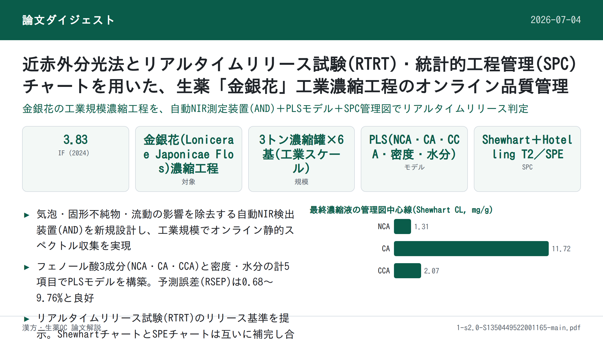
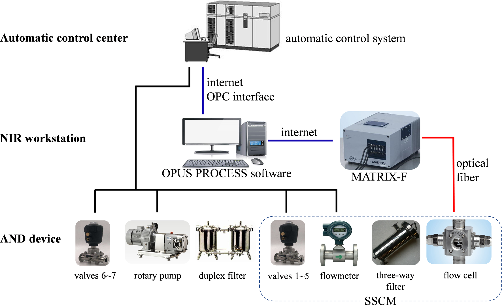
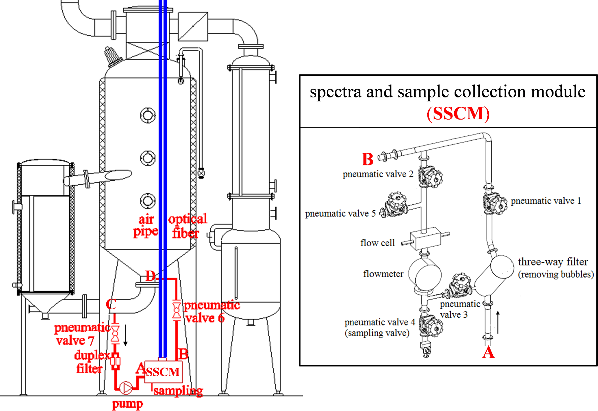
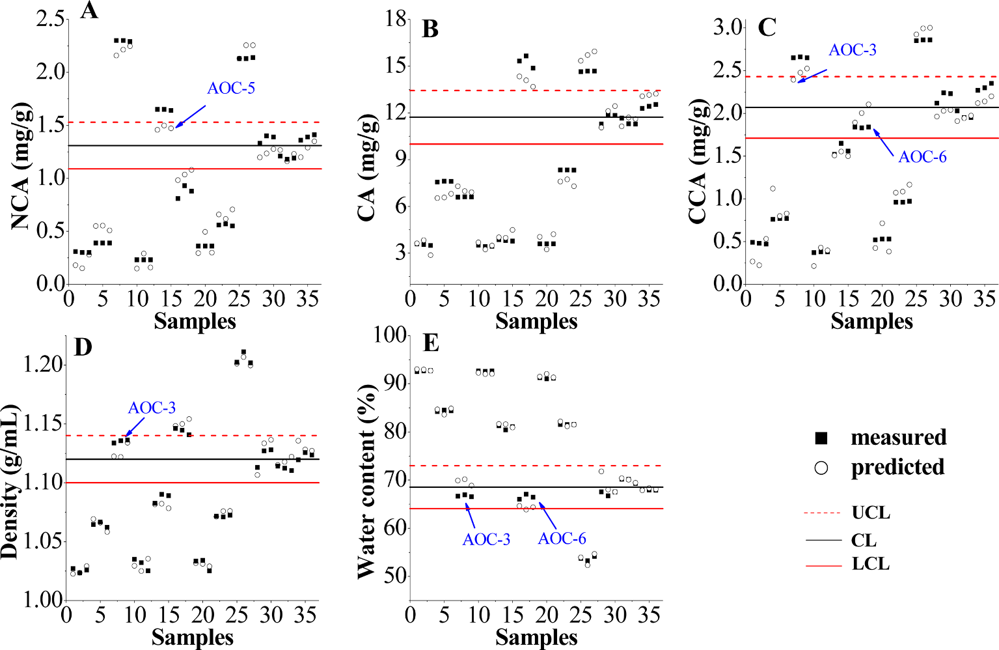
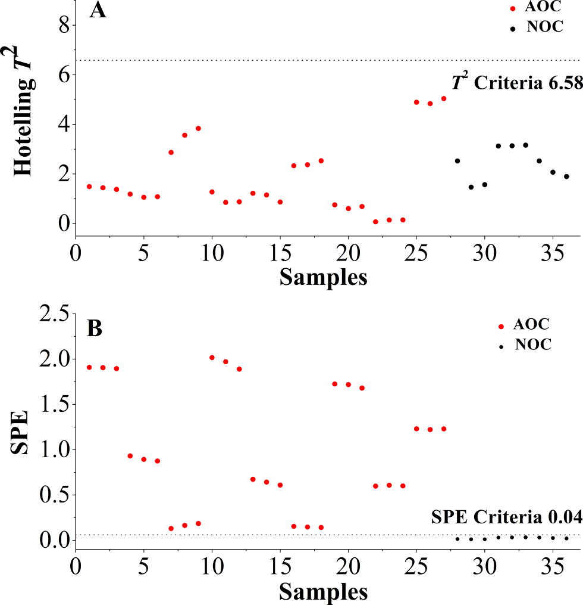

近赤外分光法とリアルタイムリリース試験(RTRT)・統計的工程管理(SPC)チャートを用いた、生薬「金銀花」工業濃縮工程のオンライン品質管理

<!-- 方針: ほぼ全訳＋必要に応じた補足。「> 補足:」は訳者注。数式はKaTeXで表示。 -->
書誌情報
- 標題（原題）: Application of near infrared spectroscopy and real time release testing combined with statistical process control charts for on-line quality control of industrial concentrating process of traditional Chinese medicine "Jinyinhua"
- 著者・所属: Ye Jin（Lishui University 生態学部）, Wenjun Du（金華市中心医院）, Xuesong Liu, Yongjiang Wu（責任著者）（浙江大学 薬学院）
- 掲載誌・巻号・DOI: Infrared Physics & Technology 123 (2022) 104135. https://doi.org/10.1016/j.infrared.2022.104135
- インパクトファクター: 3.83（Infrared Physics & Technology, 2024年版。Clarivate JCR公式ページは購読限定のため直接確認できず、journalimpact.org等の二次集計値による参考値。前年比+約10.7%の上昇傾向とされる）
- 受理経過 / ライセンス: 2021年12月24日受理（投稿）、2022年3月15日改訂受理、2022年3月18日オンライン公開。© 2022 Elsevier B.V. All rights reserved.
補足: 「金銀花（Jinyinhua）」は中国語名で、原植物はスイカズラ（Lonicera japonica Thunb.）の乾燥花蕾（Lonicerae Japonicae Flos, LJF）。解熱・抗炎症作用で古くから用いられ、日本の漢方でもスイカズラ科の生薬として知られる。本稿は、その水抽出エキスを減圧下で濃縮する「濃縮（concentrating）」という製造単位操作を対象に、近赤外(NIR)分光法によるオンライン監視と統計的工程管理(SPC)を組み合わせた、工業スケールでのリアルタイムリリース試験(RTRT)の実装研究である。
要旨（Abstract）
濃縮工程は、金銀花（Lonicerae Japonicae Flos, LJF）製品の製造における重要な単位操作である。近赤外（NIR）分光法とリアルタイムリリース試験（RTRT）を統計的工程管理（SPC）手法と組み合わせ、濃縮工程のオンライン監視、および最終LJF濃縮液に対する品質管理戦略の構築を提示した。自動NIR検出（AND）装置を設計し、濃縮液の気泡、固形不純物、流動がNIRスペクトルに与える影響を排除できることを実証した。部分最小二乗（PLS）モデルを構築し、ネオクロロゲン酸（NCA）、クロロゲン酸（CA）、クリプトクロロゲン酸（CCA）、密度、および水分含量のオンライン定量に適用したところ、リアルタイムのデータが得られ、満足のいく予測能力を示した。単変量Shewhart、多変量Hotelling T2、二乗予測誤差（SPE）を含むSPCツールを比較し、RTRTに適用した。RTRTの結果、最終LJF濃縮液のリリース基準は以下の通りであった：1.09 mg/g ＜ NCA ＜ 1.53 mg/g、10.00 mg/g ＜ CA ＜ 13.44 mg/g、1.71 mg/g ＜ CCA ＜ 2.43 mg/g、1.10 g/ml ＜ 密度 ＜ 1.14 g/ml、64.07% ＜ 水分含量 ＜ 72.99%、およびSPE結果 ＜ 0.04。ShewhartおよびSPEチャートは異常の検出と正常バッチのリリースに有用であることが証明された。本研究は、伝統中薬の工業濃縮工程のオンライン品質管理におけるNIRおよびRTRTとSPCチャートの組み合わせの有効性を実証した。
キーワード 近赤外分光法、忍冬（スイカズラ）の花、濃縮工程、リアルタイムリリース試験、統計的工程管理
1. 序論（Introduction）
2004年、米国食品医薬品局（FDA）はプロセス分析技術（PAT）のガイダンスにおいてリアルタイムリリース（RTR）の概念を提案し、プロセスデータに基づいて工程内および/または最終製品の許容可能な品質を評価・保証する能力と定義した \[1\]。2009年、国際調和会議（ICH）はバッチリリースと区別するため、医薬品開発Q8(R2)のガイドラインにおいてRTRをリアルタイムリリース試験（RTRT）に修正した \[2\]。このガイドラインは、RTRTがエンドプロダクト試験に置き換わり得ることを示唆し、RTRTの規格を策定する際には品質特性、管理手法（例：PAT）、および許容基準が重要な考慮事項であるとした \[3\]。2012年、欧州医薬品庁（EMA）はRTRTに関するガイドラインを発行し、原薬、中間体、最終製品に対するRTRTを提案した。このガイドラインは、RTRTがPATツール、例えば近赤外（NIR）分光法（通常は多変量解析と組み合わせて使用）を利用し得ることを示した \[4\]。
伝統中薬（TCM）の近代化に伴い、プロセス分析およびプロセス制御ツールはTCM医薬品において急速な発展を遂げた。しかし、原料生薬の品質は産地、栽培条件、収穫時期、貯蔵などにより大きく影響を受けうる。TCMの製造は複雑な化学成分と工程段階を含み、これがイン/オンライン監視とプロセス制御を困難にしている。そのため、TCM業界では、サンプル前処理に起因する誤差や本質的な時間遅延といった重大な欠点を持つにもかかわらず、従来のオフライン分析法が中間体および最終製品の測定において依然として主流である。近年、中国国家食品薬品監督管理局（CFDA）はTCMの品質管理水準を高めるためPATツールの導入を奨励している。NIR分光法は、迅速・非破壊・非汚染という特性を持つ、典型的かつ広く使用されるPATツールであり、従来のオフライン分析法と比較して分析時間を大幅に短縮できる。TCMの製造における多数のNIRベースのPAT応用が報告されている。例えば、原料 \[5–7\]、抽出 \[8–10\]、配合（ブレンディング） \[11\]、濃縮 \[12\]、アルコール沈殿 \[13,14\] などである。しかし、これらの試みのほとんどは実験室規模またはパイロット規模で行われており、TCMの製造における工業規模でのイン/オンラインNIR応用の報告は少ない。
金銀花（Lonicerae Japonicae Flos, LJF、中国語で「金銀花」）は、Lonicera japonica Thunb.の乾燥花蕾に由来する。中国における重要な医薬品/食品資源として、何千年もの間、発熱および炎症の治療に広く応用されてきた。フェノール酸類、例えばネオクロロゲン酸（NCA）、クロロゲン酸（CA）、クリプトクロロゲン酸（CCA）は主要な生理活性成分である \[15\]。抗菌・抗ウイルス・解熱の生物活性を有することから、レドゥニン注射液（Reduning injection）、ショウコウレン錠（Shuanghuanglian tablets）などの中成薬（Chinese patent drugs）の原料としても使用されている \[16\]。LJF製品の製造において、抽出液を濃縮する工程は溶媒除去のための重要な単位操作であり、下流工程および最終製品の品質に重大な影響を与える。TCM工業生産において、濃縮の工程制御は通常、生産時間、手動測定した密度、および/または濃縮液の外観性状の組み合わせを通じて工程進行度を判断できる熟練オペレーターに依存している。しかし、この制御は、原料属性（例：原料および抽出液の品質）や重要工程パラメータ（例：濃縮温度・圧力）が中間体および最終製品に与える影響を無視し、工程の乱れが最後にしか、あるいは全く検出されないため、あまり効果的ではない。さらに、濃縮液の密度・濃度その他のパラメータがデジタルかつ視覚的に監視されていないため、濃縮工程の終点を精密に制御することができない。濃縮工程の間、大量の溶媒が蒸発し、密度値は継続的に上昇する。特に最後の30分間では、終点まで密度が急激に上昇する現象が観察される。密度は濃縮工程の終点判定における第一の評価指標であるだけでなく、後続の精製および/または乾燥工程に影響を与える重要な因子でもある。工程効率を改善しバッチ間変動を最小化するため、多変量法と組み合わせたNIR技術は、LJF濃縮工程における重要品質特性のリアルタイム監視を促進し、それによって継続的な品質検証とリアルタイムリリースを実現する上で大きな価値を持つと考えられる。密度、残留溶媒（水分）、および薬効成分（NCA、CA、CCA）は、LJF濃縮工程における重要品質特性である。NCA、CA、CCAはLJF濃縮液中で比較的高い濃度を有しており、オンラインNIRの実現可能性を担保している。
本研究の全体目的は、RTRTの概念をTCM業界に導入することである。NIR分光法とRTRTを初めて工業規模の濃縮工程のオンライン監視に適用し、最終濃縮液に対する品質管理戦略を構築した。我々の先行研究 \[17,18\] によれば、液状中間体の気泡、固形不純物、流動はNIRスペクトルに深刻な影響を及ぼしうる。特に濃縮工程では、真空・沸騰・乱流により多数の気泡が発生し、異常なスペクトルデータをもたらす。収集されるNIRスペクトルの精度と再現性を向上させるため、本研究は静的スペクトル収集の方法を独創的に提案し、自動NIR検出（AND）装置を設計し、工業規模の濃縮工程のオンライン監視に応用した。部分最小二乗（PLS）モデルを構築し、NCA、CA、CCA、密度、水分含量のオンライン定量に適用した。Shewhart、Hotelling T2、二乗予測誤差（SPE）などの統計的工程管理（SPC）チャートを比較し、RTRTに適用した \[19\]。正常操業条件（NOC）下で得られたバッチを用いてバッチ再現性を検討し、管理限界、すなわちRTRTの許容リリース基準を定義した。工程パラメータの人為的な異常変動を意図的に発生させ、異常検出能力を評価した。これらのプロセス分析手法・技術から得られた知見は、工程理解の向上、品質管理水準の向上、そして最終的にはエンドプロダクト試験の削減または代替に役立てることができる。
2. 材料と方法（Materials and methods）
2.1. 動的濃縮工程（Dynamic concentrating processes）
LJFの動的濃縮は、中国のTCM製薬工場に設置された6基の3トン濃縮罐（No. I～VI）で実施された。LJFの水抽出液を濃縮罐にポンプ送液し、通常操業条件下（80 ℃、真空下-0.04～-0.08 MPa、150分間）で濃縮した。蒸気エネルギーを節約するため、体積が70%以上減少した時点で、濃縮罐No. II～VIの濃縮液を順次濃縮罐No. Iへポンプ移送した。濃縮液を合流させた後、動的濃縮工程全体を完了するまでに約50分を要した。密度値は最後の30分間、5～10分ごとに手動で測定された。終点は密度が1.10～1.12 g/mlに達した時点とされた。
2.2. AND装置とオンラインスペクトル測定（AND device and on-line spectral measurement）
TCM製造工程の工業規模でのリアルタイム監視にNIR分光法を適用することは困難である。オンライン監視のため、本研究ではAND制御システム（図1）を構築・適用した。これは、生産現場のAND装置、NIRワークステーション、および自動制御センターの3部分から構成される。AND装置（図2で赤く着色）は、濃縮液の気泡・固形不純物・流動がNIRスペクトルに与える影響を低減するよう設計され、デュプレックスフィルタ、ロータリーポンプ、スペクトル・試料採取モジュール（SSCM）、光ファイバーパイプ、エアパイプ、および空気作動弁6・7を含む。図1・図2に示すように、SSCMは空気作動弁1～5、三方フィルタ、流量計、サンプリング口、および2本の透過プローブ（Solvias社、ドイツ）を備えたフローセルを含む。AND装置内の流量計、ロータリーポンプ、およびすべての空気作動弁は、自動制御センター内の自動制御システム（ACS）によって制御された。濃縮液の粘性が高いため、AND装置は濃縮罐No. Iの循環ループ上に設置され、LJF濃縮液がフローセルへ円滑に流入できるようにした。NIR放射を伝送しオンラインスペクトルを収集するため、光路長2 mmのフローセルにプローブを挿入し、光ファイバーを介してMatrix-F FT-NIR分光計（Bruker Optics Inc.、ドイツ）に接続した。単一光ファイバーの長さは30 m（一方向長）であった。
スペクトルデータの取得、データ処理、データ出力は、OPUS PROCESSソフトウェア（Bruker Optics Inc.、ドイツ）によって行われ、周期的測定の実行、測定スペクトルの評価、記録データの出力が可能であった。OPUS PROCESSソフトウェアで使用される標準化通信インターフェースであるOLE for process control (OPC) を用いて、ACSと通信した。処理されたスペクトルデータは評価され、ACSワークステーションに転送されると同時に、得られた測定データを濃縮工程の制御に利用できるようにした。ACSワークステーションとOPUS PROCESSソフトウェアはいずれも編集可能な警報限界を提供し、異常な濃縮工程中に発生しうる外れ値の識別に用いられた。現在の分析値が設定された管理限界を超えた場合、ACSとOPUS PROCESSソフトウェアはシグナルによってこの状況を通知される。警報レベルはNIRワークステーションとACSワークステーションの両方で同時に確認できる。オンライン監視が必要な場合、ACSから送られたトリガーによりOPUS PROCESSソフトウェアとAND装置が起動される。設計された手順に従い、AND装置が起動し稼働すると、流量計とロータリーポンプが始動し、空気作動弁2・3・6・7が開き、空気作動弁1・4・5が閉じる。これにより、濃縮罐内のLJF濃縮液がフローセルを通過できるようになる。NIRスペクトルを収集する際は、空気作動弁2・3が閉じ、空気作動弁1が開く。したがって、フローセル内のLJF濃縮液は停止し、静的スペクトル収集が可能となり、これにより収集スペクトルのベースラインに対する流速や気泡の影響を排除できる。サンプリングする際は、NIRデータ収集の終了時に空気作動弁4・5が開き、LJF濃縮液は重力によりパイプから流出し自動的にサンプリングされる。NIRスペクトルまたは濃縮液の収集後、空気作動弁2・3が再び開き、空気作動弁1が再び閉じる。これにより、新鮮なLJF濃縮液が再びフローセルを通過できるようになる。さらに、気泡除去機能を持つ三方フィルタは、固形不純物と気泡を効果的に排除できる。NIRスペクトル測定は5分ごとに実施され、分解能8 cm⁻¹で4000～12,000 cm⁻¹領域において収集された。各スペクトルは32回のスキャンの平均値である。動的濃縮工程が開始されると、濃縮液は10～15分ごとに採取された。濃縮液の合流（No. II～VI → No. I）後は、5分ごとに採取された。


2.3. 対照分析法（Reference assays）
LJF濃縮液中のNCA、CA、CCAの濃度は、バリデーション済みの高速液体クロマトグラフィー（HPLC）法により分析された。クロマトグラフィー分離は、Kromasil 100–5-C18カラム（4.6 × 250 mm、5 μm）を用い、30 ℃、Agilent 1260 HPLCシステム（Agilent Technologies, USA）で行われた。移動相は0.1%リン酸水溶液とメタノール（v:v = 80:20）からなり、流速1.0 ml/minであった。注入量は10 μlであった。検出波長は327 nmに設定された。工業濃縮工程中に採取した濃縮液（約1 g）を水で25～100 mlに希釈し、遠心分離・ろ過後にHPLCシステムに注入した。HPLC法のバリデーションは中国薬典（2020年版）\[20\] に準拠して実施された。システム適合性、特異性、直線性、範囲、精度、再現性、安定性、回収率などのバリデーションパラメータが検討された。
密度は、80 ℃で濃縮液1 mlを秤量することにより測定した。密度値はρ = m/v（v = 1 ml）として算出した \[21,22\]。水分含量は、中国薬典（2020年版）\[20\] が推奨する古典的な乾燥減量法（オーブン乾燥法）により検出した。すべての実験は3回繰り返された。
2.4. NIRモデルの構築（NIR model development）
文献によれば、多変量法はNIRデータから化学的・物理的情報を抽出するための必須のツールである。中でもPLS回帰は最も広く使用される線形多変量回帰法であり、文献 \[23–25\] で広範に論じられている。本研究では、スペクトル前処理およびPLS回帰はOPUSソフトウェア（Bruker Optics Inc.、ドイツ）を用いて実施された。1個抜き交差検証（LOOCV）法および予測残差平方和（PRESS）値を用いて最適な因子数を決定した。さらに、キャリブレーション結果は以下の評価パラメータにより評価された：キャリブレーションセットの相関係数（R）、キャリブレーション二乗平均平方根誤差（RMSEC）、交差検証二乗平均平方根誤差（RMSECV）、キャリブレーションの相対標準誤差（RSEC）。予測結果は以下の評価パラメータにより評価された：予測セットの相関係数（r）、予測二乗平均平方根誤差（RMSEP）、予測の相対標準誤差（RSEP）。上記評価パラメータの詳細情報は文献 \[26,27\] を参照されたい。
本研究では、動的濃縮工程の13のNOCバッチ（NOC-1～13）がNIRによりオンライン監視された。バッチNOC-1～10から採取した209の工程内サンプルをキャリブレーションセットとしてPLSモデルを構築した。バッチNOC-11～13は、構築されたPLSモデルのオンライン測定における有用性を実証し、モデルの予測能力を評価するために実施された。
2.5. 品質管理チャート（Quality control charts）
品質管理チャートは、製造工程が依然として「統計的管理状態」にあることを検証するための典型的なグラフィカルツールである \[28\]。従来型の単変量管理チャート（例：Shewhart）は、バッチプロセスにおける重要品質特性を個別に監視するために構築される。相互に相関する多数の変数を含む多変量系に関心のある特性が存在する場合、MSPC法を適用することができる。MSPCチャートは主として主成分分析（PCA）に由来し、主成分（PC、すなわち因子）を抽出してHotelling T2、SPEなどの管理チャートを工程監視のために構築する。したがって、PCAベースのMSPC法は、工程における高次元かつ相関のある変数を扱う能力を有する \[29\]。研究者らは実験室規模でTCM生産工程にMSPCとNIRを適用してきており、MSPCは異常検出とバッチプロセスの再現性評価において有効であることが証明されている \[13,30\]。
本研究では、RTRTのために2種類の品質管理チャート、すなわち単変量Shewhartチャートと多変量統計的工程管理（MSPC）チャート（Hotelling T2およびSPEを含む）が使用された。これらのチャートは、異常の識別とNOCバッチのリリースに適用された。NOCバッチから得られた合計54個の終点サンプルを用いて、SPCチャートの管理限界を定義した。SPCチャートの管理限界（すなわちRTRTのリリース基準）を満たすNOCバッチは、後続の製造単位操作へリリースされる。定義された管理限界を超える異常なオンラインデータは、外れ値として識別され警報が発せられる。LJF抽出液を製造するために、年間数十バッチの原料が使用される。バッチ間で原料の産地・品質に差異が存在する。原料の産地が変わった場合、新たな最終濃縮液のデータを既存データセットに組み込むことで管理限界が更新される。
RTRTの実現可能性を検証するため、意図的に異常操業条件（AOC）、例えば異常な濃縮温度、生産時間、および/または最終密度でバッチを運転した。ACSを持たない旧生産現場では、濃縮工程中に異常現象や問題（例：LJF抽出液の投入量の不安定さ、加熱管のスケーリングや加熱蒸気圧の変動に起因する濃縮温度の不安定さ）が時折発生していた。特に濃縮温度は最も不安定な工程パラメータの一つであり、70 ℃から90 ℃の間で変動した。AND装置の設計・設置・運用はACSを基盤として実施されたため、異常生産には遭遇しなかった。したがって、AOCバッチの実験は表1に設計された通り、パイロット生産現場で実施された。3つの濃縮温度（70 ℃、80 ℃、90 ℃）が選択され、AOCバッチの濃縮液の最終密度値は生産時間を調整することにより正常範囲（1.10～1.12 g/ml）外に制御された。バッチAOC-1～9から採取した終点サンプルは、RTRTのリリース基準と異常検出能力の評価に使用された。
表1: 工程変数を示す実験バッチ一覧。バッチNOC-1～10はモデル構築に、バッチNOC-11～13およびAOC-1～9はモデルの検証に使用された。
| バッチ番号 | 温度 (℃) | 生産時間 (min) | 最終密度 (g/ml) |
|---|---|---|---|
| NOC-1～13 | 80 | 150 | 1.12 |
| AOC-1 | 70 | 70 | 1.03 |
| AOC-2 | 70 | 110 | 1.08 |
| AOC-3 | 70 | 160 | 1.13 |
| AOC-4 | 80 | 60 | 1.03 |
| AOC-5 | 80 | 100 | 1.08 |
| AOC-6 | 80 | 165 | 1.15 |
| AOC-7 | 90 | 60 | 1.04 |
| AOC-8 | 90 | 100 | 1.09 |
| AOC-9 | 90 | 170 | 1.20 |
2.5.1. Shewhartチャート（Shewhart charts）
Shewhart管理チャートは、データの平均値 $\bar{x}$ を中心線として構築される \[31\]。管理内パラメータ $\bar{x}$ と $\sigma$ が既知である場合、上方管理限界（UCL）、中心線（CL）、下方管理限界（LCL）は次のように与えられる：UCL = $\bar{x} + k\sigma$；CL = $\bar{x}$；LCL = $\bar{x} - k\sigma$。ここで $k$ は各管理限界と中心線との距離を標準偏差の単位で表したものであり、$\sigma$ はキャリブレーションセットの標準偏差である。通常 $k = 2$ または $3$ とする。
2.5.2. Hotelling T2およびSPE（Hotelling T2 and SPE）\[28\]
各変数について $m$ 回の測定を持つ $n$ 個の工程変数に対する $n \times m$ のNIRデータ行列 $X$ を考える。行列 $X$ はPCAにより新たな行列 $T$（$f \times m$、すなわちスコア行列）に次式に従って縮約できる：
$$X = \sum_{i=1}^{f} t_i p_i^T + E$$
ここで $f$ は因子数、$p_i$ は主成分負荷量、$t_i$ はスコアベクトル、$E$ は残差行列である。新規NIRスペクトルデータ $x_{new}$ に対して、スコアベクトルは $t_{new} = x_{new} P$ として計算され、予測結果 $\hat{x}_{new} = t_{new} P^T$（$P$ は負荷行列）が得られる。残差は $e_{new} = x_{new} - \hat{x}_{new}$ として計算される。得られるHotelling統計量 $T^2_{new}$ は $T^2_{new} = t_{new} \Lambda^{-1} t_{new}^T$（$\Lambda$ は固有値行列）として、SPE統計量は $SPE_{new} = e_{new} e_{new}^T$ として計算される。したがって、有意水準 $\alpha$ におけるT2とSPEの信頼限界は次のように与えられる：
$$T^2 \le T^2_{lim} = \frac{f(m-1)}{(m-f)} F_{f,(m-f),\alpha}$$
$$SPE \le SPE_{lim} = g\chi^2_{h,\alpha}$$
$$g = v/(2c) \qquad h = 2c^2/v$$
ここで $\alpha$ は有意水準、$c$ と $v$ はキャリブレーションデータセットのSPEの平均値と分散値である。$T^2_{new} > T^2_{lim}$ または $SPE_{new} > SPE_{lim}$ の場合、異常が検出されたとみなされ、工程は管理外状態にあると判断される。
補足: 原文の $T^2_{lim}$ の式表記はやや崩れていましたが（OCR起因の乱れ）、F分布に基づくHotelling T2の一般的な信頼限界の定義に従って上記のように整理して記載しています。
3. 結果と考察（Results and discussion）
3.1. 対照分析法の結果（Results of the reference assays）
調査対象とした3種のフェノール酸の代表的クロマトグラムを図3に示す（原文参照）。これより、NCA、CA、CCAがベースライン分離されていることがわかる。理論段数5000以上、テーリングファクター0.97～1.02、分離度2.5以上が観察された場合、HPLCシステムは分析に適していると判断された。さらに、3成分それぞれのピークについて計算した純度係数は、すべてのサンプルにおいて閾値を上回っていた。HPLC法の主なメソドロジーパラメータとキャリブレーション曲線を表2に示す。
表2: 対照HPLC法のメソドロジーパラメータとキャリブレーション曲線
| 成分 | 保持時間 $t_R$ (min) | 回帰式 | 直線範囲 (μg/ml) | $R^2$ | 精度 RSD% (n=6) | 再現性 RSD% (n=6) | 安定性 RSD% (48h) | 回収率 平均% (n=6) | 回収率 RSD% |
|---|---|---|---|---|---|---|---|---|---|
| NCA | 7.87 ± 0.11 | Y = 33.59X − 25.12 | 1.939～194.4 | 0.9999 | 0.11 | 0.53 | 0.88 | 98.11 | 0.60 |
| CA | 14.50 ± 0.16 | Y = 32.48X − 112.24 | 10.11～1011 | 0.9999 | 0.13 | 0.63 | 0.37 | 101.5 | 1.5 |
| CCA | 18.01 ± 0.09 | Y = 29.49X − 27.86 | 1.977～198.0 | 0.9999 | 0.11 | 0.94 | 0.84 | 102.1 | 0.38 |
原料LJF抽出液、NOCバッチから採取した209の工程内サンプルおよび54の終点サンプル、AOCバッチから採取した27の終点サンプルを含む収集サンプルすべてが、2.3節で述べた対照分析法により分析された。結果を表3にまとめる。NOCバッチは一貫した製品品質と満足のいく再現性を有していたと結論できる。密度・水分含量と比較して、LJF抽出液におけるNCA、CA、CCAでは高いRSD値（53.2%以上）が観察された。主な要因の一つは、バッチ間で原料品質に差異があったことである。既知の通り、TCMの品質は産地、栽培条件、収穫時期、貯蔵、製造工程により大きく影響されうる。これらの変動により、各バッチ由来のLJF抽出液の品質一貫性を維持することが困難となっている。AOCバッチの終点サンプルにおいてもRSD値は大きく変動しており（60.3%以上）、これはAOCバッチが意図的に異常な工程条件で運転されたことに起因する。濃縮液の品質は工程パラメータの変動に敏感であった。したがって、NOCバッチの終点サンプルと比較して、AOCバッチの終点サンプルにおけるNCA、CA、CCA濃度はバッチ間で有意な差異が存在した。
表3: 抽出液・濃縮液における5つの品質特性の測定結果
| 区分 | NCA (mg/g) | CA (mg/g) | CCA (mg/g) | 密度 (g/ml) | 水分含量 (%) |
|---|---|---|---|---|---|
| LJF抽出液 範囲 | 0.04919～0.2257 | 0.7810～2.731 | 0.09022～0.3513 | 0.9973～1.013 | 93.76～98.32 |
| LJF抽出液 RSD% | 60.8 | 53.5 | 53.2 | 0.528 | 1.37 |
| NOC(工程内) 範囲 | 0.04919～1.408 | 0.7753～15.49 | 0.09308～2.346 | 0.9918～1.163 | 65.06～98.32 |
| NOC(工程内) RSD% | 78.0 | 72.4 | 76.6 | 4.52 | 11.3 |
| NOC(終点) 範囲 | 0.9414～1.609 | 11.01～15.49 | 1.568～2.380 | 1.111～1.163 | 65.06～72.57 |
| NOC(終点) RSD% | 13.7 | 6.19 | 12.4 | 0.927 | 2.59 |
| AOC(終点) 範囲 | 0.2268～2.304 | 3.432～15.65 | 0.3721～2.857 | 1.024～1.211 | 53.24～92.72 |
| AOC(終点) RSD% | 81.3 | 60.3 | 67.8 | 5.44 | 16.7 |
図4（原文参照）は、典型的な濃縮工程（バッチNOC-10）におけるNCA、CA、CCA、密度、水分含量の経時変化を対照分析法により測定した結果を示す。NCA、CA、CCA、密度の経時変化曲線は類似した傾向を示し時間とともに増加する一方、水分含量は逆の傾向を示す。フェノール酸類と密度はいずれも、高い水分含量（98%超）と絶え間ない蒸発を反映して、初期には緩やかで安定した増加を示した。濃縮工程の第2段階（濃縮罐No. II～VIから濃縮罐No. Iへの濃縮液の移送）に入った後、100～120分の間、動的曲線は変動した。主な理由は、濃縮液の合流操作が濃縮罐No. Iの真空を利用して行われたため、温度と真空度の低下がもたらされたことである。加えて、5基の濃縮罐（No. II～VI）間で濃縮液の密度値に差異があり、これは各濃縮罐の濃縮効率の違いに起因する。濃縮液の合流後、大量の水分が蒸発し、濃縮工程終了まで、より急速な増加率が観察された。
3.2. NIRスペクトル解析（NIR spectral analysis）
図5A（原文参照）はNOCバッチの生NIRスペクトルを示す。NIRスペクトルデータの前処理はOPUSソフトウェアで実施された。定数オフセット除去、最小-最大正規化、直線減算、ベクトル正規化、乗法散乱補正、1次微分（1st D）、2次微分、およびそれらの組み合わせを含む複数の前処理法がスペクトルデータセットに対して試験された。これらの手法の詳細な説明は文献 \[32–34\] を参照されたい。各品質特性について、OPUSソフトウェアにより300以上のモデルが構築された。計算結果によれば、直線減算法を用いたCAモデルが最良の性能を示し、定数オフセット除去法および1st D法がそれに続いた。NCA、CCA、水分含量、密度の各モデルについても、モデル最適化後に同様の結果が得られた。我々の先行報告文献 \[10,18\] によれば、直線減算法と定数オフセット除去法は、スペクトルベースラインに対する流速・気泡・固形不純物の影響を排除できず、最小-最大正規化などの他の再処理法についても同様であった。そのため、ピークを明瞭にし定数・線形ベースラインドリフトを排除するため、生スペクトルデータは1st D法により前処理された。微分操作ごとにノイズレベルが上昇するため、すべての微分スペクトルはSavitzky-Golay（S-G）フィルタ（21点）で平滑化された。
NIRスペクトルにおける吸収は、赤外分光法（中赤外）にみられるC-H、O-H、N-Hの基本振動の結合音および倍音に由来する \[35\]。分子構造中に豊富なC-HおよびO-H結合が存在するため、収集されたNIRデータはフェノール酸類に対する十分な化学的情報を含んでいた。C-HおよびO-H伸縮のフィンガープリント吸収に起因する4000～4500 cm⁻¹の領域は、透過率がゼロに近くノイズを多く含む可能性がある。水のNIRスペクトルは、それぞれO-Hの第一倍音、およびO-Hの変角・伸縮の結合音に由来する6944 cm⁻¹および5155 cm⁻¹付近に強い吸収を示す。得られる強い吸収帯は水溶液のNIRスペクトルで一般的にみられ、4500～5450 cm⁻¹および6100～7500 cm⁻¹領域の大部分の吸収を覆い隠す。7500～12000 cm⁻¹領域（第2・第3倍音に由来）の主な特徴は低強度・低S/N比である。したがって、「ノイズ領域」（4000～4500 cm⁻¹）、「水領域」（4500～5450 cm⁻¹、6100～7500 cm⁻¹）、「低強度領域」（7500～12000 cm⁻¹）は除外された。残る5450～6100 cm⁻¹領域は、C-H伸縮の第一倍音に関連する吸収帯を含みフェノール酸類の定量分析に十分寄与するため、NCA、CA、CCAモデルに適用された。図5B（原文参照）に示すように、1st DとS-Gで前処理したスペクトルは、NOCバッチとAOCバッチの間で5690 cm⁻¹付近に明瞭な違いを示し、異常検出・診断の実現可能性を明らかにしている。密度・水分含量モデルについては、「ノイズ領域」と「低強度領域」を除外し、残る4500～7500 cm⁻¹のスペクトル領域がモデル構築に選択された（図5A・図5C、原文参照）。
LJF濃縮工程のデータ傾向を観察しより明確に理解するため、バッチNOC-1～10（キャリブレーションセット）のスペクトルデータをPCAにより検討した。これは、1st DとS-Gによる前処理後のスペクトルデータ（5450～6100 cm⁻¹）を用いて計算された。用いた最初の2つのPCで全変動の89%が説明された。濃縮工程全体を通じたPCスコア（PC1対PC2）の推移チャートが得られ、図6Aに示す（原文参照）。PC2のスコアは継続的に減少する一方、PC1は時間とともに最初は減少し、その後増加する。特に100～120分の間はデータ点がより密集し、濃縮液が時間とともにあまり変化しないことを示している。一方、120分以降はPC1のスコアが大きく変動する。これらの結果は3.1節での観察と一致していた。
NOCバッチとAOCバッチの終点サンプルの全体的な変動を詳細に検討し、クラスタ傾向を可視化するため、PC1対PC2の散布図を得た（図6B、原文参照）。NOCバッチとAOCバッチの間に明瞭な境界が観察できる。異なる工程条件（温度、時間、最終密度）を持つAOCバッチは、互いに異なる分布を示す。NOCバッチとAOCバッチの濃縮液は品質面でかなり異なっていたことが明らかである。PCAベースのMSPCは、異常検出とNOCバッチリリースにおいて実現可能なツールであると考えられる。
3.3. モデル構築と予測（Model development and prediction）
上述の領域におけるNIRスペクトルデータは、1st DとS-Gで前処理され、実測値と相関付けられた。CA、NCA、CCA、水分含量、密度に対するPLSモデルが構築された。5つのモデルの統計結果を表4に示し、良好なキャリブレーションおよび予測結果が示されている。NIR分光法とPLS法およびAND制御システムにより、LJFの濃縮工程のオンライン定量監視が実現できることが結論できる。
我々の先行報告文献では、濃縮液中の密度と残留溶媒含量の間に良好な相関が観察されている \[12\]。表4に示すように、密度・水分含量モデルは、フェノール酸類のモデルより明らかに良好な性能を示し、最小の予測誤差（RSEP ≤ 1.31%）を示した。この現象の主な原因は、水分含量と密度の値が高いことにある。一方、フェノール酸類の測定濃度は低く、天然物に対するNIR分光法の検出限界（0.1%～0.01%）に近かった \[14,25\]。同様に、LJF濃縮液中のCA濃度はNCA・CCAより著しく高く、CAモデルはNCA・CCAモデルと比較して、RSEC・RSEP値が低いため予測誤差が小さかった。
各モデルは通常、時間的・空間的変動の制約下で使用されるため、新規サンプルや新規バッチの出現により構築済みモデルが「無効」となる場合、多変量キャリブレーションには実用上の限界が生じる。産業製造における長期使用のために構築モデルの有用性を確保するため、再キャリブレーションによるモデル更新の方法が提案されている \[18,36\]。原料の産地が変わり、かつr値が0.9を下回った場合、新規バッチのサンプルを既存モデルのキャリブレーションセットに組み込み再キャリブレーションを行うことでモデル更新が実施される。
表4: 5つの品質特性に対する最適モデルの統計値
| 品質特性 | 因子数 | R (キャリブレーション) | RMSECV | RMSEC | RSEC (%) | r (予測) | RMSEP | RSEP (%) |
|---|---|---|---|---|---|---|---|---|
| NCA | 7 | 0.9884 | 0.058 | 0.051 | 9.29 | 0.9982 | 0.060 | 9.76 |
| CA | 6 | 0.9948 | 0.367 | 0.322 | 5.58 | 0.9995 | 0.104 | 1.96 |
| CCA | 7 | 0.9916 | 0.079 | 0.068 | 7.85 | 0.9982 | 0.074 | 7.41 |
| 密度 | 8 | 0.9727 | 0.011 | 0.009 | 1.01 | 0.9848 | 0.007 | 0.68 |
| 水分含量 | 9 | 0.9949 | 0.962 | 0.752 | 1.09 | 0.9953 | 1.170 | 1.31 |
3.4. オンライン定量監視（On-line quantitative monitoring）
濃縮工程における重要品質特性のオンライン測定のためのPLSモデルの使用は、工業規模での反復実験を通じて検討された。5つのモデルはOPUS PROCESSソフトウェアにアップロードされ、バッチプロセス監視に適用された。バッチ運転を通じて異常スペクトルはほとんど収集されなかった。図7（原文参照）に示すように、予測された動的曲線は滑らかであり、急激で著しい変動は観察されない。静的スペクトル収集法は、NIRスペクトルに対する気泡や流速変動の影響を効果的に最小化できることがわかる。NIRオンライン予測による品質特性の傾向は、対照分析法により得られたものと一致した。5つのモデルは円滑に稼働し良好な予測能力を示し、3.3節で得られたキャリブレーションおよび予測結果を裏付けた。
3.5. Shewhartと定量的RTRT（Shewhart and quantitative RTRT）
NOCバッチでは大きな操業上の問題は発生せず、最終濃縮液のすべての品質特性について良好な一貫性が達成された。ShewhartチャートのCLはこれらのNOCバッチから採取した終点サンプルに基づいて構築された。特定のAOCバッチ（例：AOC-6）の品質特性がNOCバッチに非常に近かったため、すべての品質特性のShewhart管理限界は±2標準偏差に固定された。Shewhart管理チャートの統計値を表5に示す。バッチNOC-11～13およびAOC-1～9からの終点サンプルは、定量的リリース基準と異常検出能力を評価するためのテストセットとして使用された（表6）。定量的RTRTの結果、NOCバッチの予測値と実測値はいずれも管理限界内にあり、正しい識別と成功裏のリリースを示した（図8）。AOCバッチについては、ほとんどの異常がShewhartチャートによって検出できたものの、一部のAOCバッチは特定のチャートで誤って識別された。NCAチャート（図8A）では、バッチAOC-5のHPLC実測値はUCLを上回っていたが、NIR予測値はLCLを下回っており、これはおそらくNCA用に構築されたPLSモデルの予測能力が限定的であったことに起因する。同様に、CCAチャート（図8C）ではAOC-3の予測値の一つがUCLを下回り、誤ってNOCサンプルと判定された。AOC-6（図8C）では、実測値・予測値のいずれも管理限界内にあり、NOCバッチと誤認された。したがって、中間体の濃度がUCLおよびLCLに近い場合、分析誤差に起因する誤判定の可能性があり、これがリリースのリスクを高める。NCA・CCAモデルと比較して、CAモデルはより小さい予測誤差を示した。CAチャート（図8B）では、AOCバッチの予測値・実測値のいずれもが限界の外側に位置していた。
密度チャート（図8D）では、バッチAOC-3の実測値・予測値がいずれも管理限界内にありNOCバッチと誤認された。同様に図8EではバッチAOC-3・AOC-6も誤認された。一因は、AOC-3・AOC-6の異常条件がモデル訓練に用いた正常操業条件に近かったことである。バッチAOC-3を例にとると、平均最終密度と水分含量はそれぞれ1.13 g/mlと66.7%であり、NOCバッチとほぼ同等であった。これらの類似性が誤識別を招く一因となった。
まとめると、LJF濃縮液の定量的リリース基準は以下の通りであった：1.09 mg/g ＜ NCA ＜ 1.53 mg/g、10.00 mg/g ＜ CA ＜ 13.44 mg/g、1.71 mg/g ＜ CCA ＜ 2.43 mg/g、1.10 g/ml ＜ 密度 ＜ 1.14 g/ml、64.07% ＜ 水分含量 ＜ 72.99%。最終濃縮液は、リリースされる前に上記のすべてのリリース基準に合格し試験を通過する必要があった。最終的に、AOCバッチの終点サンプルはいずれも所望のリリース基準を満たさず、NOCバッチは成功裏にリリースされた。
単変量Shewhart管理チャートは異常検出とNOCバッチのリリースを効果的に行えたが、変数間の関数的関係の存在を考慮していない。Shewhartチャートのみによる濃縮液の監視は非常に危険である。リリース精度を向上させるためには、単変量ShewhartとMSPC統計量の組み合わせが必要と考えられる。
表5: Shewhart管理チャートの統計値
| 品質特性 | CL | σ | LCL | UCL |
|---|---|---|---|---|
| NCA | 1.31 mg/g | 0.11 | 1.09 mg/g | 1.53 mg/g |
| CA | 11.72 mg/g | 0.86 | 10.00 mg/g | 13.44 mg/g |
| CCA | 2.07 mg/g | 0.18 | 1.71 mg/g | 2.43 mg/g |
| 密度 | 1.12 g/ml | 0.01 | 1.10 g/ml | 1.14 g/ml |
| 水分含量 | 68.53% | 2.23 | 64.07% | 72.99% |
表6: RTRT検証のためのAOC・NOCバッチ情報（サンプル番号とバッチの対応）
| サンプルNo. | バッチ | サンプルNo. | バッチ | サンプルNo. | バッチ | サンプルNo. | バッチ |
|---|---|---|---|---|---|---|---|
| 1 | AOC-1 | 10 | AOC-4 | 19 | AOC-7 | 28 | NOC-11 |
| 2 | AOC-1 | 11 | AOC-4 | 20 | AOC-7 | 29 | NOC-11 |
| 3 | AOC-1 | 12 | AOC-4 | 21 | AOC-7 | 30 | NOC-11 |
| 4 | AOC-2 | 13 | AOC-5 | 22 | AOC-8 | 31 | NOC-12 |
| 5 | AOC-2 | 14 | AOC-5 | 23 | AOC-8 | 32 | NOC-12 |
| 6 | AOC-2 | 15 | AOC-5 | 24 | AOC-8 | 33 | NOC-12 |
| 7 | AOC-3 | 16 | AOC-6 | 25 | AOC-9 | 34 | NOC-13 |
| 8 | AOC-3 | 17 | AOC-6 | 26 | AOC-9 | 35 | NOC-13 |
| 9 | AOC-3 | 18 | AOC-6 | 27 | AOC-9 | 36 | NOC-13 |

3.6. MSPCと定性的RTRT（MSPC and qualitative RTRT）
単変量Shewhartチャートに加え、Hotelling T2およびSPEを含むMSPCチャートが、濃縮液が管理状態にあるかを検証するために使用された。最初の10のNOCバッチから収集した最終濃縮液を用いて、MSPCチャートの管理限界（95%信頼区間）を定義した。全体変動の89%を占める最初の2つのPCを用い、波長5450～6100 cm⁻¹でMSPCモデルを構築した。NOCおよびAOCバッチの各終点サンプルについて予測したHotelling T2とSPEの結果を図9に示す。Hotelling T2とSPEの管理限界はそれぞれ6.58と0.04であった。Hotelling T2管理チャート（図9A）では、テストしたAOC・NOCバッチはすべて管理限界を下回っており、異常診断の失敗を示している。一方SPEチャート（図9B）では、NOCバッチは管理限界内に良好にとどまり、これらすべてのAOCバッチは限界を超えていた。SPEチャートはAOCバッチの異常を効果的に検出し、NOCバッチを適切にリリースできることがわかる。さらに、バッチAOC-1、AOC-4、AOC-7はSPEチャートの管理限界から大きく逸脱しており、これはそれぞれ最小の濃縮時間（70 ℃で60分・60分に相当する条件、原文の記載通り）と最も低い最終密度（それぞれ1.03、1.03、1.04 g/ml）に起因すると考えられる。一方、バッチAOC-3・AOC-6はSPEの管理限界に近く、最終密度が訓練セットと類似していたことによる。SPEチャートは最終密度に対してより敏感である可能性がある。
2.5.2節で述べたように、Hotelling T2は最初の重要ないくつかのPCを用いて計算されるのに対し、SPEは残差を用いて計算される。PC1とPC2が全変動の89%を占めていたものの、残りの11%も異なる変動要因を説明しうる重要なものであった。したがって、本研究においてSPEチャートは異常検出に有効なMSPCツールであり、最終濃縮液に対するRTRTの定性的リリース基準は「予測SPE結果 ＜ 0.04」である。

補足: 原文3.6節の「70 ℃、60 ℃、60 ℃」という記述は、表1のAOC-1（70 ℃・70分）、AOC-4（80 ℃・60分）、AOC-7（90 ℃・60分）と厳密には対応が取りにくく、原文の表記のまま訳出しています（原文参照）。
4. 結論（Conclusions）
本研究で設計されたAND装置とその制御システムは、濃縮液の気泡・固形不純物・流動がNIRスペクトルに与える影響を最小化し、それによってオンラインスペクトルデータの精度を向上させることが実証された。NIRスペクトルは、LJF工業濃縮工程を通じて自動的かつ継続的に収集することができた。構築されたPLSモデルは、工業規模における5つの重要品質特性のオンライン定量監視に成功裏に適用された。
生薬製品の品質は原料および工程変動の影響を受けやすい。バッチ再現性を維持し最終製品品質を確保するため、RTRTの概念がTCM製造工程に初めて導入された。SPC統計量と組み合わせたオンラインNIRベースのRTRTが検討され、異常検出とNOCバッチのリリースにおいて有効であることが確認された。ShewhartチャートとSPEチャートは互いに補完的であった。この2種類のSPC管理チャートを組み合わせて使用することが必要である。RTRTの結果、AOCバッチの終点サンプルは定性的・定量的RTRTリリース基準を同時に満たさず、NOCバッチは正しく識別され成功裏にリリースされることが示された。したがって、LJF濃縮液のリリース基準は以下の通りであった：1.09 mg/g ＜ NCA ＜ 1.53 mg/g、10.00 mg/g ＜ CA ＜ 13.44 mg/g、1.71 mg/g ＜ CCA ＜ 2.43 mg/g、1.10 g/ml ＜ 密度 ＜ 1.14 g/ml、64.07% ＜ 水分含量 ＜ 72.99%、およびSPE結果 ＜ 0.04。定性的・定量的RTRTリリース基準の両方を満たす最終濃縮液は、下流工程へリリースされる。リリース基準を満たさない最終濃縮液は、実際の製造工程においてリリースリスクを低減するため、対照分析法により再分析されることが期待される。オンラインNIRベースのRTRTとSPC管理チャートの組み合わせは、検出効率を向上させるだけでなく、TCMの品質管理戦略の構築と生産工程の最適化にも役立つと展望される。
利益相反の開示
著者らは、本論文で報告された研究に影響を与えたとみなされうる、既知の競合する金銭的利害関係または個人的関係を有していないことを宣言する。
謝辞
浙江省自然科学基金（LGC19B050002）、麗水市科学技術プログラム（2020GYX05）、および国家重大新薬創製科技重大専項（2018ZX09201010）からの資金援助に謝意を表す。
訳者補足
補足: 本稿は、NIRによる定量分析（PLSモデル）そのものよりも、「気泡・固形不純物・流動という濃縮液特有の測定妨害要因を、AND（自動NIR検出）装置というハードウェア設計で解決し、工業スケールでオンライン測定を成立させた」という工学的な工夫と、「RTRT（リアルタイムリリース試験）という規制的枠組みをTCM製造に初めて適用した」という点に主眼がある。当サイトの他のNIR関連論文（例:danshen-hplc-nir-chemometrics）が主に産地判別・成分予測のケモメトリクスに焦点を当てるのに対し、本稿は「製造工程のオンライン管理」という川下（生産現場）の視点が強く、tcm-granulation-pat-review（造粒工程のPATレビュー）とも同系統である。
補足: ShewhartチャートとMSPC（Hotelling T2・SPE）チャートの使い分けは実務上重要な示唆を含む。本研究では、各成分・密度・水分の実測値に基づく単変量Shewhartチャートが定量的なリリース基準（規格値そのもの）を与える一方、スペクトル全体のパターン変化を捉えるSPEチャートが、個々の成分値が規格に近い境界事例（例: AOC-3, AOC-6）を補足的に検出できた。両者は独立した判定軸として併用することで初めて頑健な異常検出ができる、という結論は、単一の定量指標だけに頼らないQC設計の一般的な教訓として実務者に参考になる。